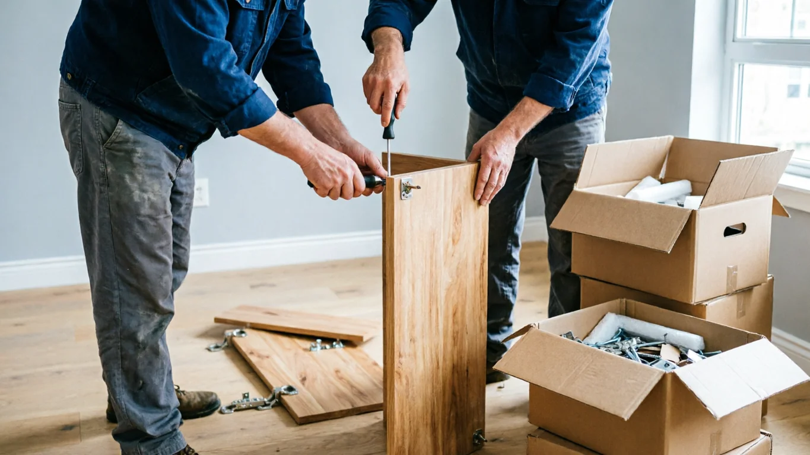

No tot buidatge de pis necessita resoldre's en 24 hores. Però quan hi ha una data inamovible —la signatura de l'escriptura, l'arribada del nou inquilí, l'inici d'una reforma— el temps es converteix en el factor crític i l'elecció d'empresa passa a ser urgent, no només convenient.
El buidatge urgent no és un servei diferent a l'estàndard: el procés, la qualitat i la documentació són exactament els mateixos. El que canvia és la reorganització d'agenda que implica per a l'empresa, el nombre d'operaris que es mobilitza i, en conseqüència, el cost. Aquesta guia explica tot això amb dades reals i sense promeses exagerades.
Un buidatge urgent és aquell que s'ha de completar en un termini molt curt —habitualment entre poques hores i 72 hores— per una data límit que no es pot moure. No és un servei d'emergència com els de fontaneria o electricitat: els terminis de «mateix dia» o «menys de 24 hores» són possibles però depenen de la disponibilitat d'aquell moment específic. El més freqüent i realista és un servei en 24–48 hores acordat amb antelació d'almenys mig dia.
Quan es necessita realment un buidatge urgent
Hi ha situacions en què el buidatge urgent no és un caprici sinó una necessitat real amb conseqüències econòmiques o legals si no es resol a temps. Aquests són els casos més habituals:
Signatura d'escriptures imminent
La data de signatura davant notari està fixada i el contracte especifica que el pis s'ha de lliurar lliure de contingut. El comprador pot reclamar danys si l'habitatge no està buit en el moment acordat. En aquests casos, el buidatge no pot esperar.
Urgència molt altaLliurament de claus per fi de contracte de lloguer
El contracte de lloguer venç i el nou inquilí té data d'entrada. Si el pis té mobles del propietari o de l'inquilí anterior que s'han de retirar, el termini és el que marca el contracte. Cada dia de retard pot suposar costos addicionals o conflictes.
Urgència altaInici de reforma programada
L'empresa de reformes arriba en dos dies i el pis no està buit. Les empreses de reformes no gestionen mobles: necessiten l'espai desocupat per treballar des del primer moment. Endarrerir l'inici d'obra té cost econòmic i pot alterar tota la planificació.
Urgència altaHerència amb termini legal o fiscal
Hi ha terminis per a l'acceptació d'herències i per a la liquidació d'impostos successoris que poden generar pressió sobre el buidatge de l'habitatge. Encara que no sempre és estrictament urgent des del punt de vista immobiliari, els hereus sovint necessiten resoldre el buidatge ràpidament per poder tramitar la venda o el lloguer.
Urgència mitjana-altaProblema sanitari o de conservació
Acumulació severa, infestació, problemes d'humitat avançada o qualsevol situació que requereixi alliberar l'espai per a intervenció tècnica urgent. En aquests casos, el temps no només té valor econòmic sinó també sanitari.
Urgència molt altaSessió fotogràfica o visites programades
S'ha contractat fotògraf professional o s'han programat visites de compradors i el pis encara té contingut. La presentació de l'habitatge depèn que estigui buit i net. Encara que la urgència és menor, els temps estan igualment acotats.
Urgència mitjanaTancament de negoci o local comercial
Venciment de contracte de lloguer de local, traspàs o tancament definitiu d'un negoci amb data fixa de lliurament de claus al propietari. La devolució del local en l'estat acordat és una obligació contractual i qualsevol retard pot generar reclamacions.
Urgència altaTrasllat laboral o mudança internacional
Canvi de residència per motius laborals amb data de sortida fixa. El propietari o inquilí que marxa necessita que el pis quedi buit abans d'una data concreta que no pot canviar.
Urgència mitjana-altaCom funciona el procés de buidatge urgent pas a pas
El procés d'un buidatge urgent és essencialment el mateix que un de programat, comprimit en el menor temps possible. El que canvia és la velocitat de cada etapa, no la qualitat del resultat ni la documentació final.
-
1
Primer contacte: trucada o WhatsApp amb fotos
Per a casos urgents, el primer contacte és sempre per telèfon o WhatsApp. Enviar 4–6 fotos del pis (distribució, contingut, accés, ascensor) permet fer una estimació inicial ràpida sense visita prèvia. Aquesta estimació orienta el pressupost encara que no el confirma definitivament.
Temps: 15–30 minuts -
2
Visita de valoració exprés
En urgències reals, la visita de valoració es fa el mateix dia del contacte. L'equip valora el volum real de contingut, les condicions d'accés (ascensor, planta, zona de càrrega/descàrrega), la presència d'elements especials i el temps estimat de treball. Amb aquesta informació es dóna el pressupost tancat.
Temps: 20–40 minuts al pis -
3
Pressupost tancat i confirmació
El pressupost urgent ha de ser tancat, per escrit i sense lletra petita. Inclou: cost base del buidatge, suplement d'urgència si aplica, gestió de residus en empresa autoritzada per l'ARC, i qualsevol extra per elements especials. La confirmació es pot fer de forma digital per no perdre temps.
Temps: fins a 1 hora des de la visita -
4
Mobilització de l'equip i logística
Per a urgències, l'empresa reorganitza la seva agenda del dia o de l'endemà per assignar l'equip necessari. En casos de mateix dia, pot implicar ampliar l'equip (més operaris = més cost però menys temps). Es gestiona també l'aparcament, permisos de càrrega/descàrrega si aplica, i la coordinació amb la comunitat de veïns si hi ha restriccions horàries.
Segons disponibilitat del dia -
5
Execució del buidatge
L'equip treballa de forma sistemàtica: primer els objectes més petits i fàcils, després els mobles grans que requereixen desmuntatge. La separació de residus per a la seva correcta gestió es fa durant la càrrega, no en destí. Els objectes de valor identificats prèviament es reserven segons el que s'hagi acordat.
- Pis de 60–80 m² amb mobiliari estàndard: 4–8 hores amb equip de 2–3 operaris
- Pis de 90–120 m² molt moblat: 8–14 hores o 2 jornades
- Més operaris = menys temps, però major cost
-
6
Lliurament i documentació
En finalitzar, el pis queda completament buit. L'empresa lliura el certificat de gestió de residus de l'Agència de Residus de Catalunya. Aquest certificat acredita que tots els residus han estat gestionats legalment i protegeix el propietari davant de qualsevol reclamació posterior. La urgència no eximeix d'aquesta obligació.
Certificat ARC inclòs sempre
Preu del buidatge urgent: quant costa el suplement
El suplement d'urgència reflecteix el cost real que té per a l'empresa reorganitzar la seva agenda, prioritzar un treball sobre altres ja planificats i mobilitzar recursos en un termini molt curt. No és una penalització arbitrària: és el cost de la flexibilitat.
| Criteri | URGENT (24h) | PROGRAMAT (7–15 dies) |
|---|---|---|
| Termini d'execució | Mateix dia o 24–48 hores | 7–15 dies des del pressupost |
| Suplement sobre preu base | +50€ a +200€ aprox. | Sense suplement |
| Pressupost previ a visita | Estimació per fotos + visita ràpida | Visita sense pressa |
| Nombre d'operaris | Pot ser major per reduir temps | Equip optimitzat |
| Gestió de residus (ARC) | Inclosa sempre | Inclosa sempre |
| Certificat de gestió | Sempre | Sempre |
| Qualitat del resultat | Idèntica | Idèntica |
| Disponibilitat garantida | Segons agenda del dia | Data confirmada |
| Flexibilitat d'horari | Més limitada | Alta |
Rangs de preu orientatius per a buidatge urgent a Barcelona
Els preus base del buidatge no canvien significativament per la urgència. El que canvia és el suplement, que oscil·la habitualment entre 50€ i 200€ sobre el preu base. Com a referència:
- Urgència en 48–72 hores: habitualment sense suplement o amb suplement mínim (0–50€) si hi ha disponibilitat raonable
- Urgència en 24 hores: suplement orientatiu de 50–150€ sobre el preu base del buidatge estàndard
- Urgència el mateix dia (menys de 12 hores): suplement orientatiu de 100–200€, subjecte a disponibilitat estricta i reorganització d'agenda
- Més operaris per reduir temps: cada operari addicional suma al cost total, però comprimeix el temps proporcionalment
Font de referència sobre suplements: Mudanzer publica el suplement de servei urgent en 50€. Altres proveïdors del sector a Barcelona apliquen rangs similars.
Davant la pressa de temps, alguns propietaris o empreses poden cedir a la temptació de no documentar correctament els residus. Això és un error amb conseqüències legals. La gestió sense empresa autoritzada per l'ARC pot generar multes al propietari de l'immoble. Exigeixi sempre el certificat de gestió, encara que sigui urgent.
Com preparar el pis per reduir el temps al mínim
La velocitat d'un buidatge urgent depèn en part del propietari. Hi ha accions concretes que pot fer abans que arribi l'equip per reduir significativament el temps de treball:
-
Marcar clarament què es conserva i què es retira
Si hi ha objectes que s'han de quedar (documents importants, objectes de valor, records familiars), etiqueti'ls amb adhesius o separi'ls físicament abans que arribi l'equip. Això evita interrupcions i decisions sobre la marxa que alenteixen el treball.
-
Separar documents i objectes de valor personal
Documents d'identitat, testaments, escriptures, joies o qualsevol objecte de valor sentimental o econòmic han d'estar ja retirats i en lloc segur abans que arribi l'equip. Buscar-los durant el buidatge consumeix temps valuós.
-
Desocupar els accessos
Passadís d'entrada, replà, escala i zona de càrrega/descàrrega al carrer. Si s'ha de demanar permís a la comunitat per fer servir el muntacàrregues o per estacionar el camió, gestioni aquest permís abans. Les comunitats de veïns a Barcelona sovint tenen normes sobre horaris per a aquest tipus de treballs.
-
Informar de condicions especials de l'edifici
Ascensor disponible o no, planta, amplada de l'escala, restriccions horàries de l'edifici o de la via pública per a càrrega/descàrrega. En zones de Barcelona amb restriccions de trànsit (Eixample, Gràcia, Ciutat Vella), les franges horàries per a vehicles de càrrega afecten directament la planificació.
-
Avisar de materials especials amb antelació
Si hi ha amiant, RAEE (residus d'aparells elèctrics i electrònics) en gran volum, substàncies perilloses o elements molt pesats (piano, maquinària), comuniqui-ho abans de la visita. Aquests elements requereixen gestió diferent i poden requerir subcontractar empresa especialitzada, la qual cosa allarga el termini.
-
Tenir el subministrament elèctric actiu
La il·luminació és necessària per treballar amb seguretat, especialment en habitacions interiors o soterranis. Si l'habitatge porta temps sense ús, comprovi que l'electricitat funciona abans de la visita i el dia del treball.

Casos reals de buidatges urgents a Barcelona
Cas A: Herència a Eixample — escriptures en 3 dies
Hereus amb escriptures de compravenda signades per a d'aquí a tres dies. El pis comptava amb mobiliari complet d'un familiar difunt, incloent-hi una cuina equipada, saló moblat, dos dormitoris i un traster al mateix edifici. Ascensor disponible, però restriccions de càrrega al carrer fins a les 10h.
Procés: visita de valoració el mateix dia de la trucada, pressupost tancat aquella tarda, inici del treball a les 8h de l'endemà amb equip de 3 persones. El traster es va gestionar el segon dia. El pis va quedar buit i documentat amb 24 hores de marge abans de la signatura.
"No pensàvem que es pogués fer en aquest termini. La coordinació va ser perfecta i el dia de la signatura teníem el pis buit i el certificat de gestió de residus a la mà."
Cas B: Reforma a Gràcia — empresa d'obres arriba en 48 hores
Propietari amb reforma contractada per a l'endemà i el pis encara amb mobiliari de l'inquilí anterior. Pis en tercera planta sense ascensor en una finca de Gràcia amb escala estreta. L'empresa de reformes no podia esperar: tenia altres treballs programats i l'inici del projecte estava acordat.
Per l'escala estreta i la manca d'ascensor, es va reforçar l'equip a 3 persones per a la segona part del dia (mobles grans). Els residus voluminosos (sofà gran, llit doble, armari encastat) es van baixar per l'escala amb tècniques de desmuntatge. El pis va quedar llest a les 19h, dotze hores després de l'inici.
"L'empresa de reformes no va haver d'esperar ni un dia. Sense aquest servei urgent, hauríem perdut la reserva amb els reformistes."
Cas C: Canvi d'inquilins a L'Hospitalet — mateix dia
Propietari amb nou inquilí entrant aquella tarda i l'inquilí sortint que havia deixat mobles i objectes sense retirar. Pis de 5a planta amb ascensor a L'Hospitalet. Contacte a primera hora del matí, estimació per fotos de WhatsApp, visita a les 9h i treball iniciat a les 10:30h.
Retirada completa de saló, cuina i tèxtils. Gestió de RAEE (frigorífic) separada amb justificant de deixalleria. Desinfecció lleugera a cuina i bany com a servei addicional. Lliurament del pis buit a les 17h, amb temps suficient per a l'entrada del nou inquilí.
"Vam enviar les fotos per WhatsApp i en menys d'una hora ja teníem preu i confirmació. El pis va estar llest abans de la tarda."
Errors freqüents en buidatges urgents i com evitar-los
-
Esperar a l'últim moment per trucar
Molts buidatges «urgents» podrien haver-se planificat amb més marge. Trucar amb només unes hores d'antelació limita dràsticament les opcions, pot implicar un suplement major i no garanteix disponibilitat. Si sap que té una data límit, actuï tan aviat com ho sàpiga.
✓ Solució: contracti amb la major anticipació possible fins i tot quan el termini ja sembla curt. -
Acceptar pressupost verbal sense confirmació escrita
En urgències, alguns propietaris es conformen amb un preu verbal per telèfon. Si no hi ha pressupost escrit, el cost pot canviar en arribar al pis. En urgències, més que mai, exigeixi el pressupost per escrit abans de confirmar el treball.
✓ Solució: demani confirmació escrita (WhatsApp, email) abans que arribi l'equip. -
No comunicar elements especials per endavant
Si hi ha amiant, piano, RAEE de gran volum o accés molt complicat i no es comunica en fer el pressupost, l'equip pot arribar sense els mitjans adequats. Això pot endarrerir el treball o generar costos addicionals no previstos.
✓ Solució: a les fotos de WhatsApp, mostri tots els elements que puguin ser problemàtics. -
No verificar les restriccions de càrrega/descàrrega a la zona
Barcelona té zones amb restriccions horàries estrictes per a vehicles de càrrega. A l'Eixample, Gràcia o Ciutat Vella, les franges autoritzades poden ser de poques hores al matí. Si el treball es programa fora d'aquestes franges sense saber-ho, pot haver-hi multes o retards.
✓ Solució: informi l'empresa de la zona exacta; ells coneixen les restriccions locals i planifiquen en conseqüència. -
Pensar que la urgència justifica no demanar certificat de residus
La gestió legal de residus és obligatòria independentment del termini. Una empresa que no pot facilitar certificat de l'ARC no està operant legalment. El propietari de l'immoble pot ser considerat responsable subsidiari del destí dels residus.
✓ Solució: exigeixi el certificat sempre, encara que sigui urgent. Comprovi el registre a residus.gencat.cat.
Què no és un buidatge urgent: diferències amb altres serveis
El terme «urgent» en el sector del buidatge no sempre significa el mateix. Convindria distingir entre diversos conceptes:
Buidatge urgent ≠ Desnonament
El desnonament és un procés judicial mitjançant el qual el propietari recupera la possessió del seu habitatge quan l'inquilí no l'abandona voluntàriament després d'una resolució judicial. El buidatge d'un pis desnonat es produeix després que els béns de l'ocupant han estat dipositats pel jutjat. No és una gestió que pugui organitzar unilateralment el propietari ni l'empresa de buidatge: requereix resolució judicial i protocol específic. Si està en aquesta situació, consulti amb el seu advocat.
Buidatge urgent ≠ Neteja d'emergència
Quan hi ha una emergència sanitària (inundació, incendi, defunció, Síndrome de Diògenes), els serveis necessaris poden incloure neteja de biotrauma, desinfecció especialitzada o tractament de materials perillosos. Això va més enllà del buidatge estàndard i requereix empreses amb autorització específica. El buidatge és un pas previ o complementari en aquests casos, no la solució completa.
Buidatge urgent ≠ Buidatge gratuït sota pressió
Hi ha empreses que ofereixen buidatge gratuït si els mobles tenen valor de revenda suficient. En urgències extremes, la possibilitat d'avaluar amb calma el valor dels objectes és més limitada. Exigir gratuïtat quan hi ha urgència real rarament és possible o realista.
VaciadoDePisos.cat: com gestionem les urgències
El nostre equip treballa a tota l'àrea metropolitana de Barcelona amb capacitat de resposta en 24–48 hores per a situacions urgents. No prometem terminis impossibles: el que garantim és honestedat sobre la disponibilitat real del moment i treball ràpid un cop confirmada la data.
Com funciona la nostra resposta urgent
- Trucada o WhatsApp amb fotos: estimació inicial en menys d'1 hora
- Visita de valoració exprés: el mateix dia en la majoria dels casos
- Pressupost tancat per escrit: sense sorpreses al final del treball
- Execució en 24–48 hores: segons disponibilitat de l'equip aquell dia
- Certificat de gestió de residus de l'ARC inclòs sempre
- Arribada estimada a BCN ciutat: 30–90 minuts; Àrea Metropolitana: 60–120 minuts
Zona de cobertura urgent
Necessita buidatge urgent a Barcelona?
Truqui ara o enviï fotos per WhatsApp. Estimació en menys d'1 hora. Pressupost tancat, sense sorpreses i amb certificat de gestió de residus inclòs.
Preguntes freqüents sobre buidatge urgent
Es parla de buidatge urgent quan el servei s'ha d'executar en un termini molt curt —habitualment 24 a 72 hores— per una data límit inamovible: signatura d'escriptures, lliurament de claus, inici de reforma o emergència. No és el mateix que un servei d'emergència tipus fontaneria: els terminis depenen de la disponibilitat real de l'empresa aquell dia.
El suplement varia segons l'empresa i el termini real. Com a orientació: urgències en 48–72 hores poden no tenir suplement si hi ha disponibilitat; urgències en 24 hores solen suposar entre 50€ i 150€ addicionals; urgències el mateix dia poden implicar 100–200€ extra sobre el preu base. Alguns proveïdors com Mudanzer publiquen 50€ com a tarifa d'urgència.
Les més habituals: signatura d'escriptures imminent, venciment de contracte de lloguer amb nou inquilí, inici de reforma programada, herència amb terminis fiscals o legals, tancament de negoci amb data de lliurament de claus, i emergències sanitàries que requereixen alliberar l'espai amb rapidesa.
Sí. Per a casos urgents, moltes empreses accepten estimació inicial per fotos o vídeos de WhatsApp (4–6 imatges del contingut, accés i distribució). Permet arrencar la planificació. El preu definitiu i tancat es confirma sempre després de visita presencial, encara que sigui breu.
Un pis de 60–80 m² amb mobiliari estàndard triga 4–8 hores amb un equip de 2–3 operaris. Pisos més grans o molt moblats poden requerir 1–2 dies. Si el termini és molt curt, es pot ampliar l'equip (més operaris = menys temps, però major cost).
Sí, sempre. La urgència no eximeix de l'obligació legal de gestionar els residus correctament. Una empresa registrada a l'Agència de Residus de Catalunya lliura el certificat en tots els casos. Si una empresa es nega a facilitar-lo, no està operant dins de la legalitat.
Marcar què es conserva i què es retira, separar documents i objectes de valor, desocupar accessos (passadís, escala, zona de càrrega), informar de restriccions de l'edifici i de la zona, i verificar que l'electricitat del pis està activa. Aquestes accions poden reduir el temps de treball en 1–2 hores.
Si l'inquilí va deixar objectes personals, hi ha un protocol legal: cal notificar-li de forma fefaent abans de retirar res. En urgències amb nou inquilí esperant, es pot actuar si hi ha acord signat o notificació prèvia documentada. Sense aquesta documentació, l'empresa i el propietari assumeixen risc de reclamació civil.
Si es detecta amiant o altre material perillós durant el treball, aquesta part del buidatge s'ha d'aturar. La retirada d'amiant requereix empresa autoritzada amb equips específics i autorització de l'Agència de Residus. Informi sempre de la possibilitat d'amiant abans de començar per evitar sorpreses en plena urgència.
Cap en el resultat final. El pis queda igualment buit, la gestió de residus és idèntica i el certificat de l'ARC és el mateix. El que canvia és la planificació, el cost per suplement d'urgència i de vegades el nombre d'operaris. La qualitat del treball no varia.
Per a serveis el mateix dia: trucar a primera hora del matí. Per a 24 hores: avís la tarda anterior. Per a 48–72 hores: antelació còmoda que pot no implicar suplement si hi ha disponibilitat. Com més aviat avisi, millors opcions tindrà.
Conclusió: actuar a temps és la millor gestió de la urgència
Un buidatge urgent ben gestionat no és un miracle logístic: és organització ràpida amb recursos adequats. La majoria de les «urgències» podrien haver-se evitat amb una mica més d'antelació, però quan la data límit ja hi és, la clau és actuar amb la major anticipació possible dins del marge que queda, triar empresa amb experiència real i documentar-ho tot correctament.
Tenim terminis de lliurament que no esperen. El que sí que pot triar és com gestionar-los.